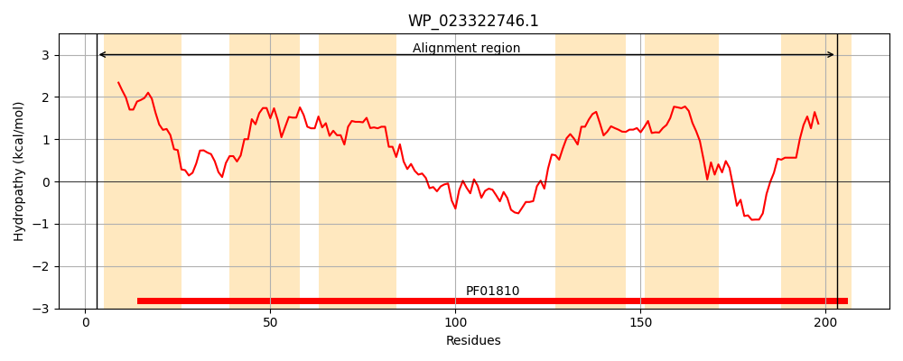
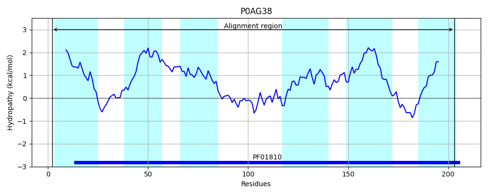
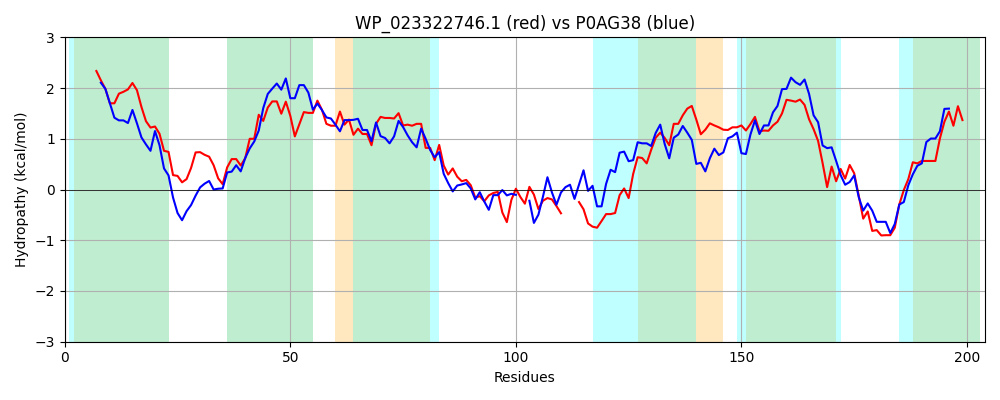

Hit Accession: P0AG38
Hit TCID: 2.A.76.1.2
Hit Description: gnl|BL_ORD_ID|8848 gnl|TC-DB|P0AG38|2.A.76.1.2 Threonine efflux protein - Escherichia coli.
Mach Len: 204
e:0.000000
Query TMS Count : 6
Hit TMS Count: 6
TMS-Overlap Score: 5.700000
Predicted Substrates:CHEBI:5584;hydron, CHEBI:16857;L-threonine
BLAST Alignment:
Score: 276 , Bit scores: 110 bits, E-value: 1.7e-30, Alignment length: 204, Percentage identity: 31
Query: 3 LSSLMAIAAVLIMGVISPGPSFIFVARNAVARSRVHGLVTALGTGAGAAIFSIMAMLGLQKVLTAVPELFIGLKVAGGIYLLWLGYKIFRGSAQPMDFSASGMAGNHSLLK---TFRDGLYTQLSNPKTALVFASIFTALLPAQIPTAFYYIVPLMSFLIDVSWYSLVALVLSADRPRRVYLRLKRRIDIATATVLGALGLRLI 203
L + +A V I+ ++SPGP F FV++ AV+RSR ++ LG G +++ +A+LGL ++ + L + V GG+YL W+GY++ RG+ + SA A L K +F GL T L+NPK + F S+F+ + + T + + + + ++W+++VA + + + RR Y RL + ID + G+ LI
Sbjct: 2 LMLFLTVAMVHIVALMSPGPDFFFVSQTAVSRSRKEAMMGVLGITCGVMVWAGIALLGLHLIIEKMAWLHTLIMVGGGLYLCWMGYQMLRGALKKEAVSAP--APQVELAKSGRSFLKGLLTNLANPKAIIYFGSVFSLFVGDNVGTTARWGIFALIIVETLAWFTVVASLFALPQMRRGYQRLAKWIDGFAGALFAGFGIHLI 203 | Protein Hydropathy Plots: |
|---|
|  |  |
Pairwise Alignment-Hydropathy Plot:
|
|---|
|  |